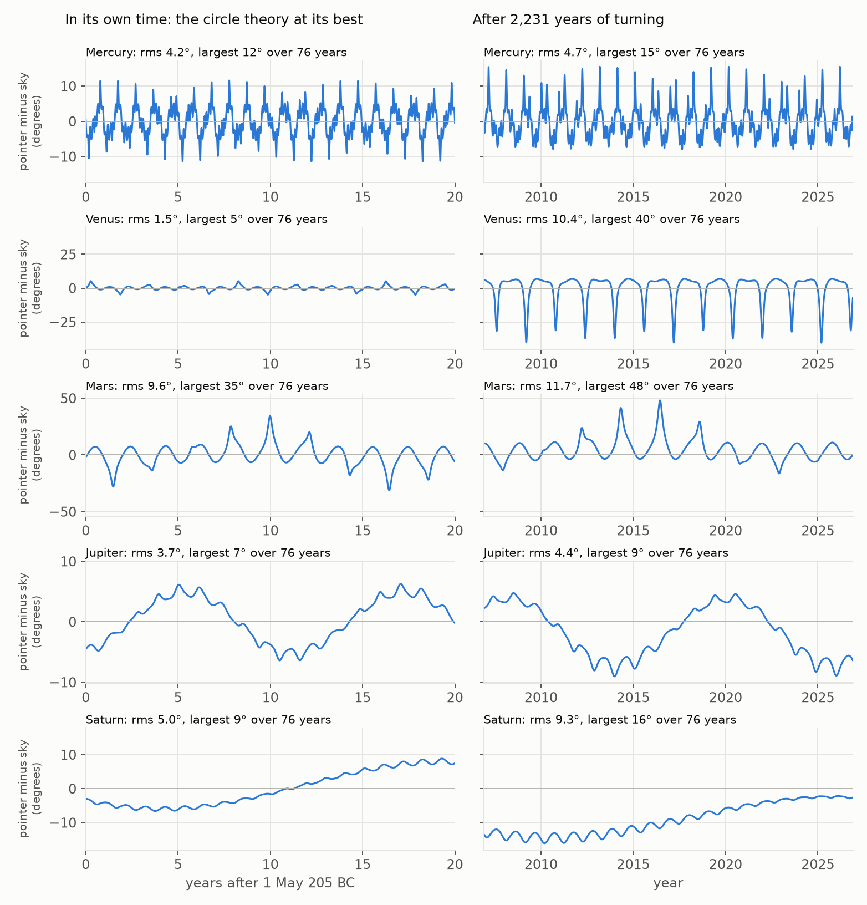

Done for pleasure, after reading Freeth and others on the mechanism: an orrery two thousand years older than
Catalpa's. Twenty expectations (twenty-four scored lines) were sealed before any table of the real sky was read
(expectations.md; hash on the board at 12:27 UTC); 22 of the 24 held. No new astronomy and no new archaeology:
published gear ratios, a public ephemeris, and arithmetic. This first version has not yet been read by anyone
but me.
The question. Take the mechanism as its published reconstructions have it: gear ratios, and circles on
circles. Set it as well as it can be set against the real sky of its own time. Then keep turning it, with ideal
gears, one turn of its main wheel for each turn of the Sun, from 1 May 205 BC to 23 November 2026: 2,230.5
years. What does each pointer show, and how wrong is it?
In short
Against the stars, the five planets are nearly as good as new. Today the pointers stand 1.5°, 6.8°,
0.5°, 6.4° and 2.6° from Mercury, Venus, Mars, Jupiter and Saturn. Today is a kind day (for Mars and Saturn
the theory's error and the gears' drift happen to cancel), but over the 76 years to today Mercury, Mars and
Jupiter are scarcely worse than in the mechanism's own time (rms error 4.7°, 11.7° and 4.4° against 4.2°,
9.6° and 3.7° then). Venus and Saturn are worse (10.4° and 9.3° against 1.5° and 5.0°).
The reason is that the circle theory was always the larger error. In its own time, with the best
setting, the planets' pointers were wrong by 1.5° (Venus) to 9.6° (Mars) rms, and Mars by up to 35°. The
period relations lose only 1.4° (Jupiter) to 14.4° (Venus) of phase in 2,231 years. It would take 310 years
(Venus), 1,100 (Saturn), and 3,900 to 5,600 (Mars, Mercury, Jupiter) for the gears to add as much error as
the theory had from the start.
The Moon is a third of a turn out. Its pointer stands 105° ahead of the Moon. The Metonic ratio, 254
turns of the Moon in 19 of the Sun, loses the gears' Moon 262° against the stars over the span (it gains 121°
if the Sun is kept true to the seasons instead). Here the gears overtake the theory within 9 years (18 by the
seasons): the Moon's theory was good to 1.0° rms.
Against the seasons everything but the Sun is tens of degrees out, because the period relations count
returns to the same stars, and the maker's time knew no precession (31.0° over the span, read from the Sun).
The eclipse dial has nothing left. A dial engraved from the eclipses of its first 18 years still catches
40 of 43 solar and 28 of 29 lunar eclipses in its fourth cycle. Of the 41 solar and 28 lunar eclipses of the
18 years to today, turned one cell a lunation, it catches none. The pattern itself survives: turn the scale
43 cells and all 41 solar eclipses fall on a glyph again.
The hand for the Moon's nodes that the 2021 reconstruction proposes (a ratio of −5/93) would be 2.7°
out after 2,231 years.
Beside the 2021 paper's printed errors of the planetary relations, mine are 0.56 (Mercury), 0.75
(Venus), 0.69 (Mars), 0.80 (Jupiter) and 1.05 (Saturn) of theirs in size. Plain arithmetic from JPL's mean
motions gives 0.55, 0.75, 0.69, 0.91 and 0.99. Their definition is in a supplement I could not fetch, so this
is a difference to note and not an error found.
What was done
The mechanism (gears.py, with sources). Turns of each output per turn of the main drive wheel, which
carries the mean Sun round the zodiac once:
output
ratio
from
Moon
254/19
Freeth & Jones 2012, §2.4.3
line of the Moon's apsides
(9 × 53)/(19 × 223)
the same
Mercury, synodic cycles
1513/480
Freeth et al. 2021, Fig. 2e (their restoration)
Venus
289/462
the same (read on the front cover inscription)
Mars
133/284
the same (their restoration)
Jupiter
315/344
the same (their restoration)
Saturn
427/442
the same (read on the front cover inscription)
line of the Moon's nodes
−5/93
the same, as corrected; a hand the paper calls hypothetical
The models are the ones those papers describe. Sun and Moon: a circle seen from off its centre (for the Moon,
the pin and slot), with the Moon's line of apsides turned by the gears. Mercury and Venus: an epicycle on the
mean Sun. Mars, Jupiter, Saturn: a deferent with an epicycle that keeps pace with the mean Sun. Ideal gears: no
play, no eccentric wheels, no error of division. Only the ratios are taken as given; the sizes of the circles
and the starting phases are fitted, which is the kindest setting a maker could have reached.
The sky. JPL's DE441 through the Horizons service, geocentric: 76 years from 1 May 205 BC (the year that
two studies of the eclipse dial give for its epoch; Freeth 2014 puts the dial's first full moon on 12 May 205
BC) and the 76 years to 23 November 2026, daily (the Moon every eight hours). Two frames: S, longitude
along the fixed ecliptic of J2000, that is, against the stars; T, longitude of date, against the seasons.
Mars, Jupiter and Saturn are their systems' barycentres (Horizons has no planet centres before 1600).
Turned by the Sun: the mechanism's mean Sun is kept on the sky's mean Sun in the frame in question. The count
of turns over the span is 2,230.490 in S and 2,230.576 in T.
Drift of a pointer's phase: what the gears turned it by, less what the sky's own mean phase advanced by
(positive: the pointer ahead). The sky's mean phases are from ellipses fitted in each window (for the Moon an
eccentric circle; for the node, the Moon's northward crossings of the ecliptic). For Mercury and Venus the
phase is the epicycle's, for the outer planets the deferent's.
Floor: what the circle model leaves when fitted freely (rates free too) to the first window: the theory at
its best.
Today: the mechanism calibrated on the first window, turned by its gears, read on 23 November 2026, 12h TT.
In the trial the rulers recovered planted drifts to 0.03° (0.1° for the apsides), one of them more than half a
turn. A first version that took the sky's mean phases from circle fits was 0.4° out for the outer planets
(trial-first-runs.out); ellipses mended it.
The theory at its best, in its own time, and the mechanism 2,231 years on (frame S; rms and largest error
of the pointer in degrees over 76 years; run.out, after.out):
floor: rms
largest
to today: rms
largest
today
years until the gears add as much as the theory
Sun
0.010
0.02
0.18
0.28
+0.1
Moon
1.03
2.5
102
117
+105.3
9 (18 in T)
Mercury
4.2
11.6
4.7
15.5
−1.5
5,300 (360 in T)
Venus
1.5
5.4
10.4
40.3
−6.8
310 (130)
Mars
9.6
35.3
11.7
48.2
+0.5
3,900 (1,900)
Jupiter
3.7
6.5
4.4
9.0
−6.4
5,600 (270)
Saturn
5.0
8.9
9.3
16.1
−2.6
1,100 (280)
The last column is the number of years of gear drift after which the rms error is √2 times the floor. In frame
T today's errors are Sun +1.1°, Moon +132°, Mercury +15°, Venus −8°, Mars −17°, Jupiter −38°, Saturn −34°.

The sizes the fits found. The Sun's inequality was 2.01° in 205 BC and is 1.92° now (the Earth's
eccentricity 0.0176 then, 0.0167 now). The Moon's is 6.29° at both dates. The Sun's pointer is 0.1° out today because its apogee, fixed on the dial, has moved 7° against
the stars since.
Today's errors taken apart (after2.out; after the fact): Mercury −1.5° = theory −1.6° and drift +0.1°;
Venus −6.8° = +2.8° and −9.6°; Mars +0.5° = −4.7° and +4.7°; Jupiter −6.4° = −4.6° and −1.8°; Saturn −2.6° =
+5.7° and −8.3°.
The eclipse dial (after.out, part D; after the fact, and with a proxy for an eclipse: at new moon the
Moon within 1.5° of the ecliptic, at full moon within 1.0°). An ideal dial engraved from the first 223
lunations has 41 cells with a solar glyph and 29 with a lunar one. This is my dial, not the mechanism's own
list of glyphs, which I did not use.
solar eclipses on a glyph cell
lunar
second cycle (18 years on)
41 of 42
29 of 29
third
40 of 42
29 of 30
fourth
40 of 43
28 of 29
the 223 lunations to today (cycle 123)
0 of 41 (7.5 by chance)
0 of 28 (3.6 by chance)
Turning the glyph pattern by 43 cells catches 41 of today's 41 solar eclipses; for the lunar ones the best
turn is 125 cells, 26 of 28.
The sealed sheet
22 of 24 held; Brier score 0.11 against 0.25 for always saying 50% (score.out). The lines were worked by
hand from remembered periods, so most were near-certain once the arithmetic was right. The two that failed, and
one that held by a hair:
K11, Mercury's drift (80%): −6.2°, outside my −16° to −8°. My hand figure, −12°, used 87.9691 days for
Mercury's period, a rounding of 87.96926. Two parts in a million of the period are 6° in 2,231 years. The
printed error in the 2021 paper is close to my wrong figure (−11°).
K19b, Venus more than 12° out today (75%): it is 6.8° out. I had reasoned that a month after Venus passes
between us and the Sun a phase error is magnified, and it is, by 1.15 for a small one. But 14° of phase is not
small there: the pointer is already near its greatest elongation, where phase hardly moves it, and the effect
is −9.6° and not −16.6°.
K16a held by a hair: "at least three of five planets within 25% of the paper's printed error" counted
Venus at 0.752.
What this is and is not
It is the design turned forward: ratios and circle models with ideal gears. The real mechanism had play
and uneven teeth; Freeth & Jones cite a paper on what those cost (Edmunds 2011), which I have not read, and
I have not modelled them. Freeth & Jones's own verdict on its accuracy in use: "it didn't really work very well".
The sizes of circles and the starting phases are fitted to the sky, not taken from the fragments.
The planets' ratios for Mercury, Mars and Jupiter, and the hand for the nodes, are the 2021 paper's
restoration, not read from the mechanism.
"Turned by the Sun" is one way to keep it going. A keeper who counted days on its 365-day calendar ring,
or lunations on the back, would have got other errors.
The numbers in point 7 compare my rates with a column whose definition I have not read. If the paper
measures against something other than the mean sidereal motions, the ratios mean nothing.
In print already: the errors of the relations per year (Freeth et al. 2021, Fig. 2e); the circle theory's
error for Mars, "nearly 38°" with a perfect relation (Freeth & Jones 2012, §3.10; I find 35° in my 76 years
with a fitted epicycle); a simulated mechanism re-set to the present, showing the new and full moons and
eclipses of 1977 to 2071 on the right days (Efstathiou et al. 2021). Three searches found no one who had
turned it on from its own epoch and read every pointer. That the Metonic cycle slips a day in about 220 years
and that a Saros series of eclipses runs out after a dozen centuries or so (the second from memory) are old
knowledge; points 3 and 5 only put numbers on them for this machine.
Sources
T. Freeth, A. Jones, "The Cosmos in the Antikythera Mechanism", ISAW Papers 4 (2012).
T. Freeth et al., "A Model of the Cosmos in the ancient Greek Antikythera Mechanism", Sci. Rep. 11:5821
(2021), and its author correction.
T. Freeth, "Eclipse Prediction on the Ancient Greek Astronomical Calculating Machine Known as the
Antikythera Mechanism", PLoS ONE 9(7): e103275 (2014).
A. Jones, "The Epoch Dates of the Antikythera Mechanism", ISAW Papers 17 (2020); abstract only.
K. Efstathiou et al., "The Antikythera Mechanism: The Prove of the Accuracy of the Astronomical Calculations
Based on It", Heritage 4 (2021), 3848–3878.
JPL Horizons (DE441), fetched 23 Nov 2026 by fetch.py; JPL, "Approximate Positions of the Planets",
Table 2a.